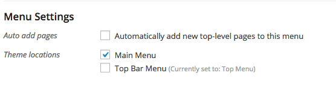
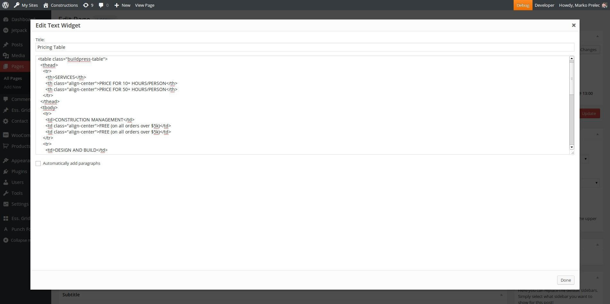
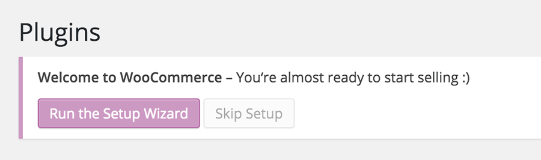
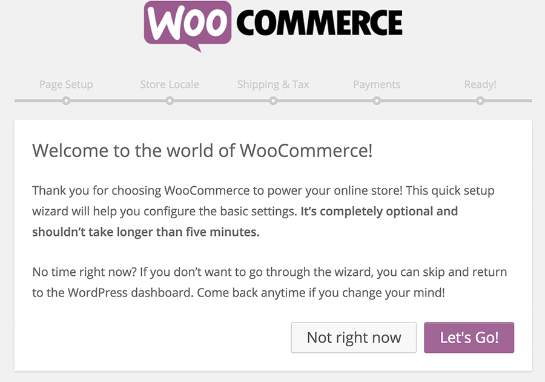
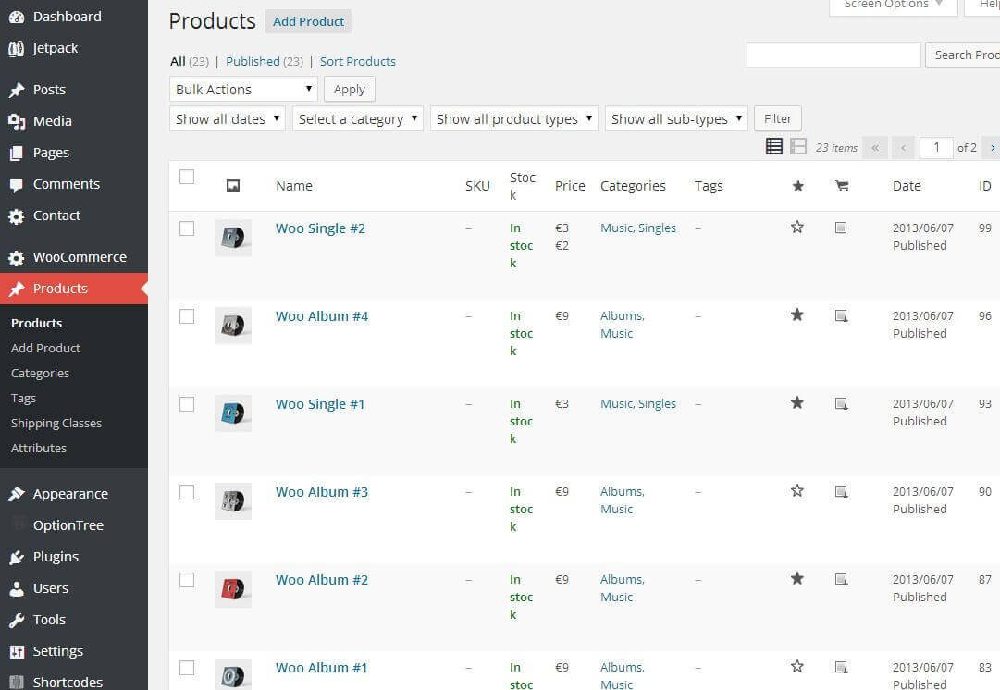
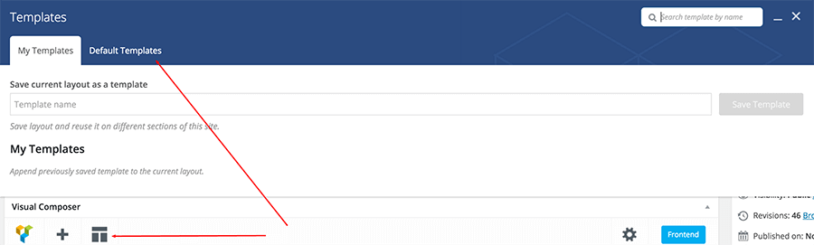

General & Installation
Few Words on Start
Introducing CargoPress, the best premium WordPress theme for transportation, freight, and logistics businesses. CargoPress is easy to set up and use. It provides a simple roadmap to create a great-looking website, so you can get back to what's most important - your business and clients. CargoPress is only available on ThemeForest, so read on to see why it’s perfect for your company’s WordPress website!
Installation
I assume you already have a fresh copy of WordPress installed on your server.
You can install the CargoPress WP Theme in three different ways:
- Using Envato Market plugin - preferred method
You can install any theme you purchased on ThemeForest by installing the Envato Market plugin. Download the plugin here, by clicking on the Download .zip button. Install the plugin like you would any other plugin in a zip file and activate it. Follow the instructions in the Envato Market menu item. This is the preferred method, because you will be able to update the theme to a newer version (we are continually improving our products) from within the WordPress dashboard, like you would update a plugin or an official theme. - Upload a zip file
When you are logged in your WordPress dashboard go to Appearance » Themes » Add New » Upload Theme and select the zip filecargopress.zipyou downloaded from the ThemeForest (installable WordPress files only) and click Install Now button. - FTP upload
Unzip the contents of thecargopress.zipfile and upload the folder namedcargopressto your server towp-uploads/themes/folder using a FTP client.
Once your theme is on the server, activate it by clicking the Activate button below the preview image in Appearance » Themes
Congratulations! Now the CargoPress WP Theme is installed.
Updates
You can update the theme in two ways:
- you can setup the automatic Envato ThemeForest theme updates: please follow these steps to do so, or
- you can update the theme manually: here are the steps on how to do that.
Customize the Appearance
You can fully customize the appearance of the CargoPress WP Theme. Go to the Appearance » Themes and click on the Customize button:
The new window appears and you can now customize the appearance of your theme - upload your custom logo, change the base colors, enable/disable theme features, add Custom CSS or Javascript etc.
Special Notice
Google Maps API key needed!
Google recently changed the way that Google Maps works. Since June 22 2016 they do not allow map requests without an API key, so you will have to add a key to the theme.
Please follow the instructions from this article.Demo Content
One Click Demo Install
You can import demo content from our demo site (with blurred licensed images) with a single click of a button. Go to Appearance » Import Demo Data and click on the import button.
When setting up a content with your new theme, put special focus on the page speed optimization, especially on the image optimization process. This way you can save on your bandwidth, reduce the bounce rate on your website, and make your users happy. Our themes are created with the speed in mind but large, non-optimized images can and will ruin this experience.
Import XML File
If you want to import the demo content the old-fashioned way, you can get a fresh copy of the XML file on our server at this URL: http://artifacts.proteusthemes.com/xml-exports/cargopress-latest.xml. Don't forget to activate all required plugins before importing demo data. To import the demo data go to Tools » Import, click on WordPress (install the WordPress Importer plugin if not already installed) and upload/import the previously saved xml file (don't forget to enable the Download and import file attachments checkbox to also import the images).
Demo Widgets
After you import the demo content, you can also import widgets the old-fashioned way. The file for widget import is also located on our server: http://artifacts.proteusthemes.com/json-widgets/cargopress.json. Rename this file to cargopress.wie (mind the file extension) and use it in the plugin Widget Importer & Exporter. Go to Tools » Widget Import/Export and import the file.
After import setup
After you have imported the demo data and widgets, you should also setup these things:
- go to Settings » Reading, set the the Front page displays to a static page and select the front page and the blog page in the appropriate dropdowns,
- go to Appearance » Menus, select the main menu from the dropdown at the top and click on Select. Scroll to the bottom and set the Theme location to Main Menu (if there are more locations you can also assign other menus to those locations),
- go to Appearance » Widgets, and set Custom menu widgets, by selecting the correct menu (in footer and our services sidebars),
- optionally set other things (like logo, colors, ...). These settings can be found in Appearance » Customize.
If for some reason these URLs are not available, then all you need to do is download the All files & documentation zip from ThemeForest and you will find the content.xml and widgets.json file in the extras folder.
Header
Top Bar
On the left side you can put Site Tagline Appearance » Customize » Site Title & Tagline, very usefull for all kinds of slogans.
The right side is top menu area so you can make a new menu in the Appearance » Menus. You must choose Top Bar Menu theme location and that's it.
Logo
The logo can be changed in our Theme Options - Appearance » Customize » Theme Options » Logo.
Favicon
Since WordPress version 4.3, the favicon setting can be found in Appearance » Customize » Site Identity, where you have to set the Site Icon option.
Header Widgets
You can put a lot of widgets in the Header widget area, but your header will look great with the following widgets:
Icon Box
With widget Icon Box you can put any kind of title with small text and image in the header. In our demo we use this widget for contact information which we think is very important for customers.
In this widget you can choose Title, Text and Icon from Font Awesome. You can also choose a link for the whole box. If you leave that field empty the Icon Box will not be click-able.
We give you few Icons to choose from but you can actually use any icon from 519 Font Awesome icons. Just paste the icon title in the Icon field and that's it. How cool is that?
More than one Icon Box widget can be used in the Header.
Main Menu
Main Menu can be set in wp-admin » Appearance » Menus. Theme locations for Main Menu is called Main Menu.
Navigation Widgets
Area next to the main menu which can be used for Social Icons or other smaller widgets.
Pages
wp-admin » Pages is the area where you will spend most of your time when building a site. We added a few tools in that process so you can create your pages easier and faster.
Page Templates

You can choose between 3 different Templates - Default Template, Front Page with Slider and Front Page With Layer/Revolution Slider.
Default Template: Just a default template for simple layouts and Page Builder. First you must choose the Page Builder option under the title and you are ready to go. You can add our widgets here, choose different visual styles and much more. More about that in the next chapter.
Front Page with Slider: This is a unique template which adds an option for a slider in the page options. It can be used with Page Builder. More about that in the Slider chapter.
Front Page with Layer/Revolution Slider: We don't include these two slider plugins with the theme but we make sure they work nicely, since we know our customers want to use them. When you activate this template there is a new Page Slider meta box in which you can put ID/alias from Layer/Revolution Slider.
Page Builder
Page Builder is a very powerful tool for making pages. Here is one example of how it looks:

You can make any kind of grid with adding new rows and inside them you put widgets. When you are finished with adding widgets you can also move whole rows up and down.
For more information on how to use Page Builder please visit Page Builder by SiteOrigin documentation page.
Page Builder Row Style
Let's take a look at how we can style Page Builder rows.
To start off we have to click on "Edit Row" for the row that we want to style as shown on the image above. An "Edit Row" window will open, and on the right, there are three setting tabs: Attributes, Layout and Design. Here you can customize different things for this particular row.
In the Layout tab you can set the Bottom Margin, Padding and change the Row Layout to Full Width. In the Design tab you can set the Background Color, Background Image and other things.
To achieve the same design for the testimonial widget as on our demo page you have to click on Layout tab and set the Bottom Margin to 0px, Padding to 60px and the Row Layout to Full Width. Then click on the Design tab and set the Background Color to #eeeeee.
Page Builder Jumbotron Overlap
For wider screen (1500px +) there is really nice option in CargoPress to make first row overlapping over jumbotron. You must edit first row of the page with slider and insert class jumbotron-overlap in the Attributes -> Row Class.
Page Builder Widget Style
In CargoPress we added 2 new widget styles. You can now set a box around the widget and you can choose widget with exposed title (bigger font with thin line).
Both options can be chosen for all widgets in the page builder under the tab Design.
Page Builder Widgets
You can use almost any widget in the Page Builder. Let's take a look at few not so straight forward ones.
Visual Editor Widget
Visual Editor will create you the same editor environment as a normal WordPress editor does. You can use this widget if you want normal text editing options.
Call to Action Widget
How do I add a button? With our custom shortcodes. You can find instructions in the Buttons section.
Featured Page Widget
Featured Page is a really simple widget that we use in Page Builder. All you have to do is to select the page and one of the two layouts we made for you.
But how do I change the image and text on the Front Page?
The image on the Front Page is just the normal Featured Image of the selected page. You can change that in the sidebar of every single page. Text can be changed in the Excerpt field which can be found at the end of the page settings. If the excerpt field is not there, you must click on the Screen Option (at the top of the page) and check Excerpt. For more info please take a look at the screenshot below.

Latest News Widget
There are two different version of display for this widget. When you add the widget to page builder editor you can select a Box or Inline display type. Below you can see how the two types look like (Box on the left and inline on the right):
The options for box or inline display type are different. For box type you have a field Post order number in which you have to specify which post you want to display. If you input number 1 in it, the latest post will get displayed, if you input number 3, the third post will be displayed, and so on. But for the inline type you have to input an interval of which posts you have to display (example: from 1 to 3, would display the three latest posts).
For the Latest News widget you can also set the More News link, that will be displayed on the bottom of the widget.
This Widget is limited to 10 latest posts, so the highest number that you can input is 10.
Twitter Widget
This widget can be included everywhere - in page builder and in a normal sidebar. For that widget we use a normal WordPress Text Widget.
First, go on https://twitter.com/settings/widgets and click Create new.
Now choose your Username, height of the widget, Theme and Link color. When you are happy with your widget click on Create widget button. You will get the code which you copy and paste in the Text Widget in your WordPress site.

Slider
Building a Theme slider has never been easier.
You can create a Theme slider on any page you want. The only thing you must do is choose the page template Front Page With Slider (you can use this template even if it's not for the front page). After you select this page template there will be a new meta box at the bottom of the page which is called Front page slider. Now add your pictures, your text and your slider will be ready to go. This is an example from one of our themes:
Please take a look at this slider dimensions article for the recommended size of the slider images for this theme.
ProteusThemes Options
You can find all Theme Options in the Customizer: Appearance » Customize. This is a live preview editor for your page.
Here you can change:
- Logo & Favicon
- Header & Breadcrumbs
- Navigation
- Theme Colors
- Main Title Area
- Footer
- Custom Code
- And Much More ...
Shortcodes
Buttons
For adding buttons you must use the button shortcode which looks like this: [button]Your Text[/button]
There are 7 options with different attributes - style, href, target, fa, corners, fullwidth and class.
Text: You can change the text of the button.
Example: [button]New Text[/button]
Style: You can choose between a few styles - primary, secondary, danger, success, info or default.
Example: [button style="primary"]Your Text[/button]
Href: You can add URL to the button.
Example: [button href="http://www.proteusthemes.com"]Your Text[/button]
Target: You can choose if you want to open the link in the same - "_self" or new - "_blank" window.
Example: [button target="_blank"]Your Text[/button]
Font Awesome icon: You can add a font awesome icon to the button.
Example: [button fa="fa-phone"]Your Text[/button]
Cornes: You can change the corners of your button to be rounded.
Example: [button corners="rounded"]Your Text[/button]
Full width: You can stretch your button to full width.
Example: [button fullwidth="true"]Your Text[/button]
Class: You can add extra custom classes to the button.
Example: [button class="btn-lg extra-custom-class"]Your Text[/button]
Icons - Font Awesome
Shortcode for Font Awesome is very simillar to the buttons shortcode. It looks like this: [fa]
There are 3 options with different attributes - icon, href, target and color.
Icon: You can use any of 519 FontAwesome icon. To set the selected icon, just get the title of the icon, for example "fa-phone".
Example: [fa icon="fa-phone"]
Href: You can add URL to the icon.
Example: [fa href="http://www.proteusthemes.com"]
Target: You can choose if you want to open link in the same - "_self" or new - "_blank" window.
Example: [fa target="_blank"]
So a Font Awesome icon shortcode with a home icon, linking to a page and opening in a new window/tab would look like this:
[fa icon="fa-home" href="http://www.proteusthemes.com" target="_blank"]
Tables
Tables are in fact not made with real shortcodes but very simple html tables.
They must be inserted in the Text page editor or in the Text widget. Look at the images bellow:

After that all you need to do is to add our .cargopress-table class in the <table> and that's it.
Example for our demo Pricing Tables:
<table class="cargopress-table">
<thead>
<tr>
<th>SERVICES</th>
<th class="align-center">PRICE FOR 200+ KM</th>
<th class="align-center">PRICE FOR 600+ KM</th>
</tr>
</thead>
<tbody>
<tr>
<td>GROUND TRANSPORT</td>
<td class="align-center">FREE (on all orders over $5k)</td>
<td class="align-center">FREE (on all orders over $5k)</td>
</tr>
<tr>
<td>LOGISTIC SERVICE</td>
<td class="align-center">$22.95</td>
<td class="align-center">$232.95</td>
</tr>
<tr>
<td>TRUCKING SERVICE</td>
<td class="align-center">$16.95</td>
<td class="align-center">$166.95</td>
</tr>
<tr>
<td>WAREHOUSING</td>
<td class="align-center">$12.95</td>
<td class="align-center">$128.95</td>
</tr>
<tr>
<td>STORAGE</td>
<td class="align-center">$15.95</td>
<td class="align-center">$154.95</td>
</tr>
<tr>
<td>CARGO</td>
<td class="align-center">$9.95</td>
<td class="align-center"><a href="http://themeforest.net/item/cargopress-logistic-warehouse-transport-wp/11601531?ref=proteusthemes" taget="_blank">GET IN TOUCH</a></td>
</tr>
</tbody>
</table>
Example for our demo Default Tables:
<table class="table">
<thead>
<tr>
<th>Services</th>
<th class="align-center">For Truck</th>
<th class="align-center">For Plane</th>
</tr>
</thead>
<tbody>
<tr>
<td>Donec suscipit vehicula turpis sed lutpat</td>
<td class="align-center">35€</td>
<td class="align-center">55€</td>
</tr>
<tr>
<td>Quisque vitae quam neque.</td>
<td class="align-center">32€</td>
<td class="align-center">42€</td>
</tr>
<tr>
<td>Morbi cilisis placerat dapibus.</td>
<td class="align-center">44€</td>
<td class="align-center">31€</td>
</tr>
<tr class="active">
<td>Etiam ultrices nulla ed leo malesuada</td>
<td class="align-center">48€</td>
<td class="align-center">34€</td>
</tr>
<tr>
<td>Commodo bibendum orci vi verra ;</td>
<td class="align-center">22€</td>
<td class="align-center">33€</td>
</tr>
<tr>
<td>alesua commodo malesuada commodo</td>
<td class="align-center">16€</td>
<td class="align-center">7€</td>
</tr>
</tbody>
</table>
Plugins
We also use and support some of the best plugins for WordPress.
Required and Recommended Plugins
You can install and activate these plugins by going to wp-admin » Appearance » Install Plugins.
The list of required and recommended plugins used in this theme:
- Advanced Custom Fields
- ACF Repeater Field (bundled)
- Page Builder by SiteOrigin
- Black Studio TinyMCE Widget
- One Click Demo Import
- Contact Form 7
- Simple Lightbox
- Breadcrumb NavXT
- Custom Sidebars
- WooCommerce
Contact Form 7
We use Contact Form 7 for our Contact Us page. This is the code from our demo:
<div class="row">
<div class="col-xs-12 col-md-4">
[text* your-name placeholder "First Name"]
</div>
<div class="col-xs-12 col-md-4">
[text* last-name placeholder "Last Name"]
</div>
</div>
<div class="row">
<div class="col-xs-12 col-md-4">
[email* your-email placeholder "E-mail address"]
</div>
<div class="col-xs-12 col-md-4">
[tel* your-phone placeholder "Phone Number"]
</div>
</div>
<div class="row">
<div class="col-xs-12 col-md-8">
[text your-subject placeholder "Subject"]
</div>
<div class="col-xs-12">
[textarea your-message placeholder "Message"]
[submit class:btn class:btn-primary "SEND MESSAGE"]
</div>
</div>
After that just place the plugin's shortcode to your contact us page.
The same goes for Request a Quick Note form on front page. Here is the code from our demo:
<div class="contact-form-small">
<div class="row">
<div class="col-xs-12 col-md-6">
[text* your-name placeholder "First and Last Name"]
[email* your-email placeholder "E-mail address"]
[select menu-354 "Transport" "Storage"]
</div>
<div class="col-xs-12 col-md-6">
[text* your-subject placeholder "Subject"]
[textarea your-message placeholder "Message"]
</div>
</div>
<div class="row">
<div class="col-xs-12">
[submit class:btn class:btn-primary class:pull-right "SEND MESSAGE"]
</div>
</div>
</div>
WooCommerce
This theme supports basic WooCommerce integration.
Once WooCommerce is activated you will see this notice:
Click on Run the Setup Wizard button to begin the WooCommerce install. That will start the setup wizard, where you can set things like shop pages, store locale, shipping & tax and payments.
If you want to change some settings, you can change them in WooCommerce » Settings. There are many tabs at the top, you can configure to fit your needs.
Most of our themes come with our own demo products for the WooCommerce store and will be imported automatically when you import the demo content using our industry-leading One Click Demo Import plugin. You need to make sure that WooCommerce is activated at the time that you import the demo data.
However, you can (optionally) install the additional demo products by WooCommerce. Go to Tools » Import » WordPress and import the demo XML file which can be found in the folder where WooCommerce was installed on your server. Usually this is in wp-content/plugins/woocommerce/dummy-data/dummy-data.xml. Also check the Download and import file attachments checkbox, so that all product images will be downloaded as well.
When you're done, you should see the products:
When you are done with the settings, go to Appearance » Widgets.
Drag & Drop the WooCommerce widgets that start with "WooCommerce" to the sidebar called Shop Sidebar.

That's all, your WooCommerce shop is now ready!
Visual Composer
Visual Composer: Page Builder for WordPress is supported for our CargoPress theme from version 1.5 onwards, so in order to use Visual Composer, it's best to update your CargoPress theme to the latest version. (Note: We do not bundle this plugin with the theme).
We have converted our widgets to the Visual Composer content elements, so you can use them in the VC editor. You can add them to your site from the Add new Element menu. Our elements are marked with our ProteusThemes icon, so they are easy to spot.

Templates for Visual Composer
We've also made it very easy to create our original demo page layout templates with Visual Composer. You can choose from these pre made templates: Home Page, About Us, Contact Us, and Our Services. To recreate the theme Home Page you need to:
- Create a new page and set the page template to Front Page with Slider and set the slider images below the editor.
- In the Visual Composer editor click on Templates icon, click on Default Templates tab and then select Home Page template:
- Publish/update the page.
Nested Visual Composer Elements
Some of our Visual Composer elements are nested elements. That means that once you select the element you will have to add its child element in order to achieve the desired result.
Let's take Social Icons as an example of the nested element. When you select the Social Icons element in the VC editor a window will pop up with just a simple option to open links in a new tab and a "container" will be displayed in the editor.
Now you have to click the + icon and add a Social Icon element, edit its settings (that will actually add a social icon to the page). With this method you can add as many social Icons as you want. And that's why we use nested elements.
Other nested elements are: Google Map, Number Counter and Testimonials. They all work on the same principle, they enable you to add multiple locations, counters and testimonials.
Breadcrumbs NavXT
The breadcrumbs in this theme are powered by the Breadcrumbs NavXT plugin.
All the settings for breadcrumbs can be found in Settings » Breadcrumbs NavXT. When you first access this settings page, there might be a notice, which has a link Migrate now at the end, just click it and it will take you to the correct settings page. Here you can define a separator (which should be empty by default for our themes), breadcrumb hierarchies for different pages (pages, custom post types, taxonomy, ...) and set other breadcrumbs related things.
Default Product Breadcrumbs
Let's take a look at how to setup the default breadcrumbs used on this theme for the Products custom post type. Go to Settings » Breadcrumbs NavXT and click on the Post Types tab. Scroll down to the Product section, and set the Product Root Page to Shop page and since we set the root page, we can also disable (uncheck) the Product Archive Display checkbox. Don't forget to save the settings.
Footer
Last but not least there is our footer area. The footer area is divided into:
Footer Widgets
Footer Widgets is the place where you can add the last things to your page. You can add widgets in the Apperance » Widgets » Footer. There are also few options for that area in Appearance » Customize » Theme Options » Footer. You can changes different colors there.
Bottom Footer
The Bottom Footer area is the place for copyrights or some custom text. Custom text for the left and right side of the bottom footer can be added in live customizer Appearance » Customize » Theme Options » Footer.
Translations
Manual translation
We have an article with the video on how to translate our themes published on this link.
WPML for Multilingual sites
This theme officially supports WPML. Head over to the WPML website, buy the subscription, then download and install the following plugins:
- WPML Multilingual CMS
- WPML String Translation
- WPML Translation Management
After that the WPML wizard will guide you to properly configure the multilingual site.
For reference: the widgets and theme options can only be translated using the String Translation.
Extras
Demo Images
All images used in CargoPress WP can be found on Shutterstock.
Customizations
If you need advanced customizations on the theme, we are available for that as well.
Let us know what'd you'd like to change via support ticket and we will get back to you with a quote.
Changelog
View the CargoPress WP changelog.
Support
If you need more help after all, you can write to us.